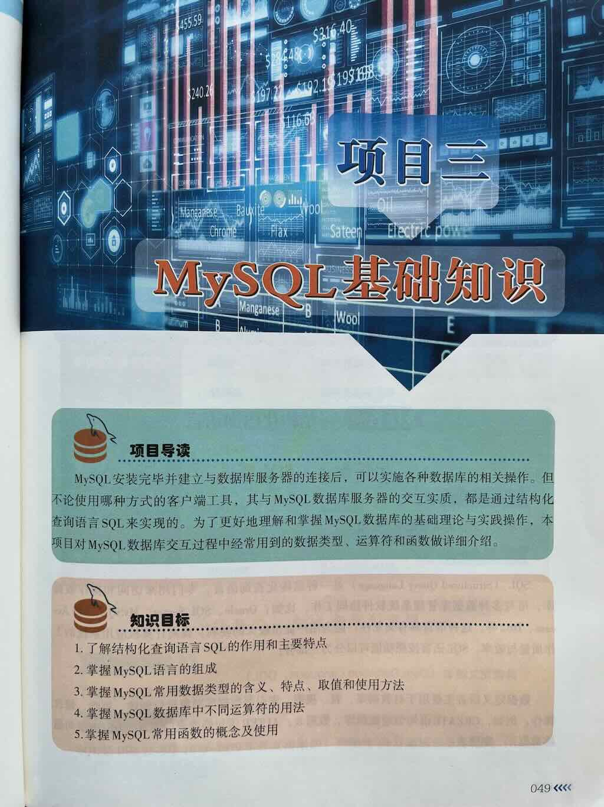
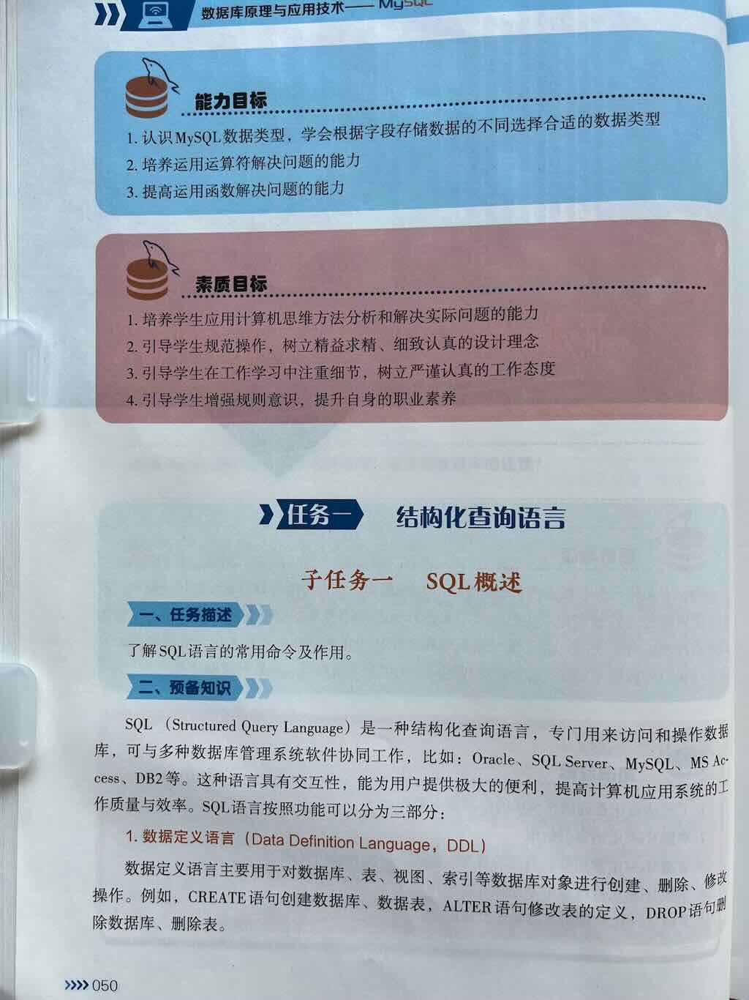
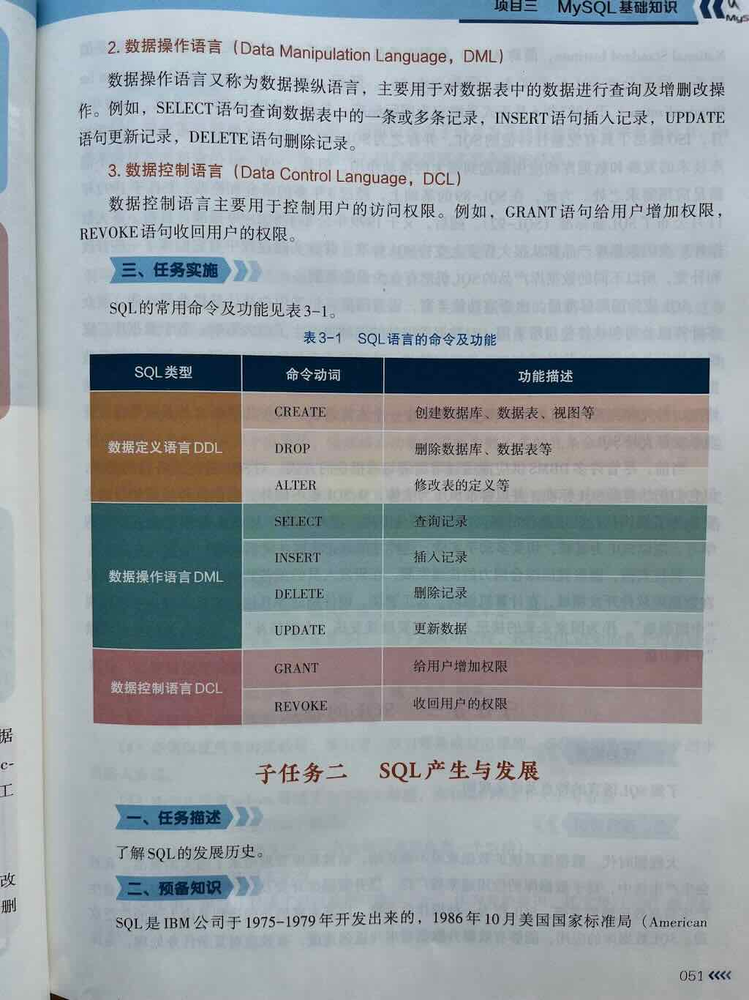
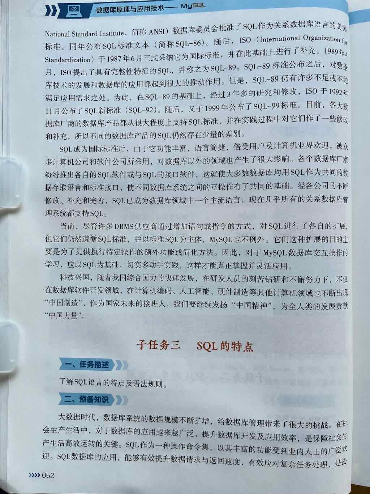
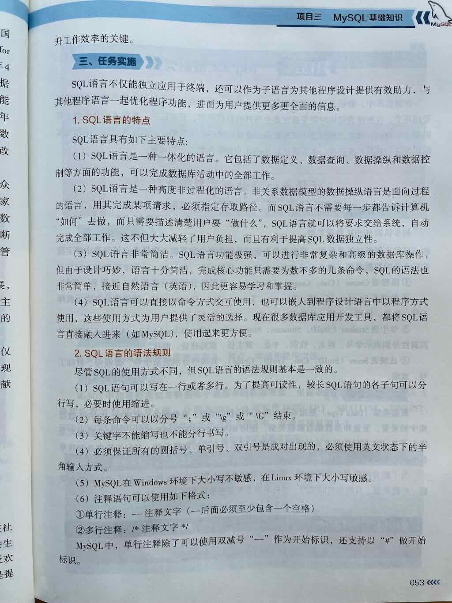

SQL概述
结构化查询语言





而 MySQL 语言，本质上就是我们在 MySQL 中使用的 SQL（Structured Query Language，结构化查询语言），它用于定义、操作、查询和管理数据库中的数据。
🎯 一句话总结：
MySQL 语言的完整组成，既包括 SQL 的标准功能模块（DDL、DML、DQL、DCL、TCL），也包括一系列基础语法元素（如数据类型、运算符、函数、表达式、注释等）。它们共同构成了 MySQL 操作数据库的完整语法体系，缺一不可。
🧩 一、MySQL 语言的整体组成结构（层次清晰版）
我们可以从两个层面来理解 MySQL 语言的完整组成：
第一层：按功能用途划分（SQL 五大核心模块）
| 分类 | 全称 | 中文名 | 主要作用 | 是否必学 |
|---|---|---|---|---|
| 1. DDL | Data Definition Language | 数据定义语言 | 定义和管理数据库、表、字段、索引、约束等结构 | ✅ 必学 |
| 2. DML | Data Manipulation Language | 数据操作语言 | 对表中的数据进行增（INSERT）、删（DELETE）、改（UPDATE） | ✅ 必学 |
| 3. DQL | Data Query Language | 数据查询语言 | 查询数据，支持条件、排序、分组、聚合、多表连接等 | ✅ 必学（重点！） |
| 4. DCL | Data Control Language | 数据控制语言 | 控制用户权限，如授权、收回权限 | ⚠️ 重要（多用户/生产环境） |
| 5. TCL | Transaction Control Language | 事务控制语言 | 控制事务的提交与回滚，保证数据一致性 | ⚠️ 进阶（金融/订单类业务） |
✅ 这是 MySQL 语言最经典的 功能模块分类方式，也是学习 SQL 功能时的逻辑框架。
第二层：基础语法元素（极易被忽略但极其重要的底层组成）
这些是构成 SQL 语句的“基石”，在 DDL、DML、DQL 等所有模块中都会用到👇：
| 类别 | 说明 | 是否必学 | 包含内容 |
|---|---|---|---|
| 1. 数据类型（Data Types） | 定义字段/变量存储的数据类型，如整数、字符串、日期等 | ✅ 必学 | INT, VARCHAR, DECIMAL, DATE, DATETIME 等 |
| 2. 运算符（Operators） | 用于表达式中的计算、比较、逻辑判断 | ✅ 必学 | 算术、比较、逻辑、连接符、特殊比较（如 LIKE, IN） |
| 3. 表达式（Expressions） | 由字段、常量、函数、运算符组合而成的计算式 | ✅ 必学 | 如 price * quantity, score + 10 |
| 4. 函数（Functions） | 内置函数，用于计算、转换、处理数据 | ✅ 必学 | COUNT(), SUM(), CONCAT(), NOW(), IF() 等 |
| 5. 注释（Comments） | 提高代码可读性 | ✅ 推荐 | -- 单行注释, /* 多行注释 */ |
| 6. 常量（Literals） | 固定值，如数字、字符串、日期等 | ✅ 必学 | 100, 'Hello', 2024-06-01 |
| 7. 变量（Variables） | 存储临时值（多用于存储过程/函数） | ⚠️ 进阶 | SET @var = 10; |
| 8. 控制结构（Control Structures） | 如条件判断、循环（常见于存储过程/触发器） | ⚠️ 进阶 | IF, CASE, LOOP, WHILE |
| 9. 子查询（Subqueries） | 查询中嵌套另一个查询 | ✅ 重要 | 用于复杂筛选、多表分析 |
| 10. 标识符（Identifiers） | 如数据库名、表名、字段名等 | ✅ 基础 | 需遵循命名规则，可用反引号 ` 包裹 |
🧠 二、MySQL 语言完整组成结构图（文字版分层）
MySQL 语言完整组成
├── 一、按功能用途划分（SQL 五大核心模块）
│ ├── 1. DDL（数据定义语言） → 定义数据库、表、字段、约束等结构
│ ├── 2. DML（数据操作语言） → 插入、更新、删除表中的数据
│ ├── 3. DQL（数据查询语言） → 查询数据，支持统计、分组、多表等
│ ├── 4. DCL（数据控制语言） → 控制用户权限（如 GRANT, REVOKE）
│ └── 5. TCL（事务控制语言） → 控制事务提交与回滚（如 COMMIT, ROLLBACK）
│
├── 二、基础语法元素（构成 SQL 的底层基石，每个模块都会用到）
│ ├── 1. 数据类型 → 如 INT, VARCHAR, DATE, DECIMAL
│ ├── 2. 运算符 → 如 +, -, >, AND, LIKE, IN
│ ├── 3. 表达式 → 如 score * 1.1, CONCAT(name, '先生')
│ ├── 4. 函数 → 如 COUNT(), NOW(), UPPER(), IF()
│ ├── 5. 注释 → 如 -- 这是注释，/* 多行注释 */
│ ├── 6. 常量 → 如数字 100, 字符串 'ABC', 日期 '2024-01-01'
│ ├── 7. 变量 → 如 @myvar（常用于存储过程）
│ ├── 8. 控制结构 → 如 IF, CASE, LOOP（存储过程/函数中）
│ ├── 9. 子查询 → 查询中嵌套 SELECT，用于复杂分析
│ └── 10. 标识符 → 如表名 `students`, 字段名 `user_name`
✅ 三、分类详解（含基础语法元素说明）
🔷 1. DDL（数据定义语言）—— 定义数据库和表的结构
✅ 核心功能：
- 创建数据库 / 表
- 定义字段的数据类型
- 设置主键、外键、唯一键、非空等约束
- 修改 / 删除表结构
✅ 常用语句：
CREATE DATABASE db_name;
USE db_name;
CREATE TABLE table_name (...);
ALTER TABLE ...;
DROP TABLE ...;
TRUNCATE TABLE ...;
✅ 涉及基础语法元素：
- 数据类型（如
INT,VARCHAR(50),DATE） - 约束（如
PRIMARY KEY,NOT NULL,DEFAULT） - 标识符（表名、字段名）
- 注释（说明字段用途）
🔷 2. DML（数据操作语言）—— 操作表中的数据
✅ 核心功能：
- 插入数据（INSERT）
- 更新数据（UPDATE）
- 删除数据（DELETE）
✅ 常用语句：
INSERT INTO table (...) VALUES (...);
UPDATE table SET col=value WHERE ...;
DELETE FROM table WHERE ...;
✅ 涉及基础语法元素：
- 数据类型匹配（插入的值必须与字段定义一致）
- 表达式（如
score = score + 5） - 运算符（如
=,>,AND） - 常量（如
'Tom',100）
🔷 3. DQL（数据查询语言）✅（重点！）
✅ 核心功能：
- 查询数据（SELECT）
- 支持条件筛选、排序、分组、聚合、多表连接、子查询等
✅ 常用语句：
✅ 涉及基础语法元素（重点！）：
- 数据类型（影响返回结果格式）
- 函数（如
COUNT(),AVG(),CONCAT()） - 运算符（如
>,LIKE,IN） - 表达式（如
price * quantity） - 子查询（嵌套 SELECT）
- 注释（提高可读性）
🔷 4. DCL（数据控制语言）—— 权限管理
✅ 核心功能：
- 创建用户
- 授权 / 收回权限
- 控制谁可以访问哪些表，能执行哪些操作
✅ 常用语句：
CREATE USER 'user'@'host' IDENTIFIED BY 'password';
GRANT SELECT ON db.table TO 'user'@'host';
REVOKE SELECT ON db.table FROM 'user'@'host';
✅ 涉及基础语法元素：
- 字符串常量（用户名、密码）
- 权限关键字（如
SELECT,INSERT）
🔷 5. TCL（事务控制语言）—— 事务管理
✅ 核心功能：
- 控制一组 SQL 操作的原子性（要么全部成功，要么全部失败）
- 常用于银行转账、订单支付等场景
✅ 常用语句：
✅ 涉及基础语法元素：
- 通常与 DML 一起使用
- 无复杂语法元素，但依赖事务一致性逻辑
🎓 四、总结：MySQL 语言的完整组成一句话版
MySQL 语言由功能模块（DDL、DML、DQL、DCL、TCL）和基础语法元素（数据类型、运算符、函数、表达式、注释、常量等）共同构成；功能模块定义了“能做什么”，而基础语法元素是“如何做”的底层基础，两者完整结合，构成了 MySQL 操作数据库的强大、灵活、标准的语言体系。
😎 掌握 MySQL 语言的完整组成，你的数据库开发与分析能力将真正专业、扎实、全能！🚀